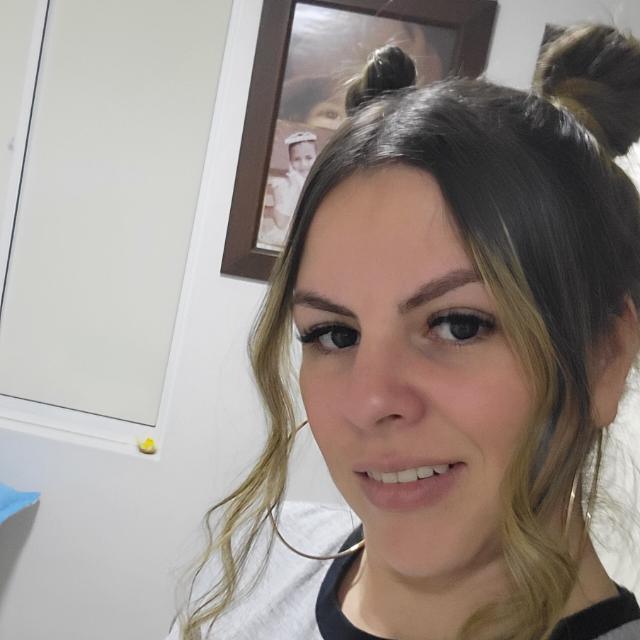
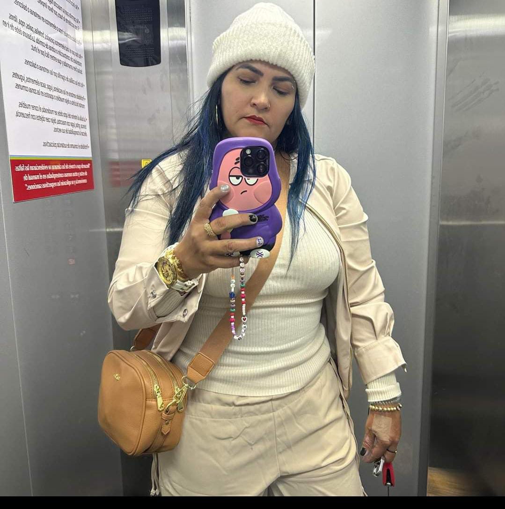
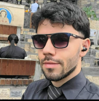

Rector
CESAR AUGUSTO CEBALLOS
Estudios: Licenciatura en Educación

Formando mentes brillantes para el futuro.
CESAR AUGUSTO CEBALLOS
Estudios: Licenciatura en Educación
JUAN FELIPE ARROYAVE
Estudios: Magíster en Pedagogía

TATIANA OSSA
Estudios: Licenciatura en Matemáticas
magister en enseñanza de las ciencias exactas y naturales 
NIDIA YULIETH HERNANDEZ
Estudios: Estudia Doctorado en Ciencias de la Educación con énfasis en investigación, formulación y evaluación de proyectos educativos en UMECIT
Estudió Investigación Docente en Universidad Pontificia Bolivariana
Estudió ETNOEDUCACION en Universidad de Antioquia
Estudió Especialista en Administración de la Informática Educativa en Universidad de Santander
Estudió Magister en Gestión de la Tecnología Educativa en Universidad de Santander
Estudió en Normal Maria Auxiliadora Caqueza
Estudió Licenciatura en Artes Plasticas en universidad de la Sabana
JOSE JESUS ALZATE
Estudios: Licenciatura en filosofía
Licenciatura en educación con énfasis en filosofía.
Licenciatura en ciencias sociales con profundización en filosofía.
LINA MARCELA GUERRERO RIVERA
Estudios: Licenciatura en Matemáticas
esp. en didactica en las ciencias
magister en filosofia
asp. a magister en CTS
doctorado en filosofia
doctorado en ciencias de la educacion.

CAMILO CASTAÑEDA
Estudios:licenciado en filosofia
administrador de empresas
doctor en ciencias de la educacion

FRANCK JAVIER GALEANO
estudios:licenciado en filosofia
magister en educacion

MARIA LUZ DARY MUÑOZ MARIn
estudios: licenciada en educacion con especialidad en orientacion y consejeria
WILFREDO ZAPATA
estudios: Licenciatura fisica
ingeniero electrico
especialista en sistemas
TATIANA SILVA
estudios: ingenieria quimica
MARIA LUZ DARY MUÑOZ MARIS
estudios: licenciada en educacion con especialidad en orientacion y consejeria
GLORIA ELCI SEPULVEDA
estudios:licenciatura en leguan castellana
Visita nuestro blog para más noticias educativas.
Conoce nuestra historia y valores institucionales.